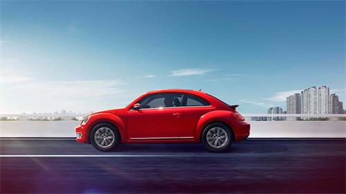
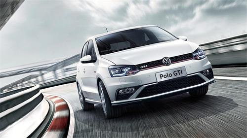
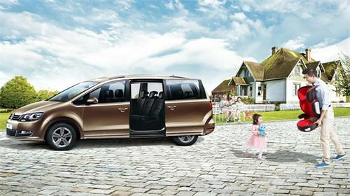

欢迎您走入大众家庭！
1.大众关怀，无微不至的持续关注您的驾驶生活。从传统的售后服务、
金融服务到一贯倡导环保的Think blue蓝创未来、以及最新发布的大众车联网，
大众关怀触及购车、保养、服务的方方面面，各项人性化服务，从
2.细节做起，成就每一段缤纷旅程。大众汽车儿童安全，
更是鼓励大家认识到车载儿童座椅的重要性，提高了整个中国家庭对儿童乘坐的
安全意识；大众驾驶学院，随时为你准备了专业、安全、环保的驾驶建议，无论
3.是驾驶新手还是驾驶熟手，都能从中获得贴心指导；
召回专区是站在消费者角度设立的沟通平台，
帮助大家从不断更新的文章中及时获知召回进展和最新动态。
售后服务
售后服务
大众汽车集团（中国）通过不断发展和完善售后服务体系，
让每位大众汽车的用户都能得到超出期望的高品质服务。
大众新动力
大众汽车新动力投资有限公司自成立以来，
主要开展对“长期汽车租赁、售后服务业务和替代性出行方案。
大众车联网
大众汽车车联网Volkswagen Car-Net是一种提供车辆远程信息交互功能的全新智能辅助系统，
作为车行途中的贴心伴侣，为您带来轻松便捷的驾乘体验。
大众驾驶学院
大众驾驶学院为您提供专业，安全，环保的驾驶建议。
召回专区
召回专区是站在消费者角度设立的沟通平台，
帮助大家从不断更新的文章中及时获知召回进展和最新动态。
新手驾驶安全篇
1.如果您是驾驶新手，我们为您推荐“新手驾驶安全篇”，其中主要提供贴心的驾驶技巧，
助您体会安全驾驶的舒心自在。在新车磨合要领中，
提示新手保持起步平稳，避免猛踩油门，且不要使发动机转速过高；即使
2.配备了倒车辅助技术，也不能轻视倒车盲区；更要注意牢记安全带以及关注儿童乘车安全。此外，
在城市越来越大的交通压力下，还为新手拟定行车路线，更进一步增加日常出行的便利。

拟定行车路线
城市交通压力越来越大，堵车日趋严重。每次开车出门前，对行驶路线进行一下计划。
尽量避开堵车地点，应在高峰时收听路况广播，有时候与其堵在长长的车龙里动弹不得，
倒不如多走几步避开拥堵更让您省油。另外，随着城市发展，修路路段众多。
在路上注意交通标志的更改，留意修路改道情况，选择一条好走的路线就可以节省油耗

新车磨合要领
保持起步平稳，避免猛踩油门，且不要使发动机转速过高.
预先原地热车，时间掌握稍长一些（30秒--1分钟左右）。
行进中及时换挡，不要长时间使用一个挡位，也不能使用高速挡低速
行驶或使用低速挡高速行驶。自动挡要避免D档到底。
选择良好路面，避免过大振动、冲撞或紧急制动。手动挡车制动前，
应先分离合器
严格控制车速。磨合期不得超过100km/h速度行驶。

儿童乘车注意事项
家长带儿童外出时更要注意安全。许多人在自驾时，
让孩子坐在前排副驾驶的座位上，这对孩子来说是非常危险的。据数据表明，
在时速40公里时汽车发生碰撞，一个5.5公斤的物体会产生110公斤的冲力，
而人是难以承受的。出行时，最好是让孩子坐在副驾驶座位后面的位置上。
并且，家长要充分认识儿童安全的重要性。成人的不良习惯
会在潜移默化中影响到儿童，如闯红灯、逆向行驶、酒后驾驶、超速行驶、
驾驶时接打手机以及不戴安全头盔、不系安全带等等，都会对儿童交通安全意识的养成
产生很多负面影响。家长应起到表率作用，不仅要随时提醒儿童注意安全，
自己更应严格遵守交通规则。